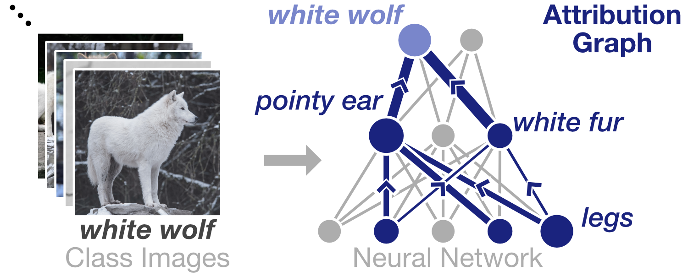

What is Summit?
Deep learning is increasingly used in decision-making tasks. However, understanding how neural networks produce final predictions remains a fundamental challenge. Existing work on interpreting neural network predictions for images often focuses on explaining predictions for single images or neurons. As predictions are often computed from millions of weights that are optimized over millions of images, such explanations can easily miss a bigger picture. We present Summit, an interactive system that scalably and systematically summarizes and visualizes what features a deep learning model has learned and how those features interact to make predictions. Summit introduces two new scalable summarization techniques: (1) activation aggregation discovers important neurons, and (2) neuron-influence aggregation identifies relationships among such neurons. Summit combines these techniques to create the novel attribution graph that reveals and summarizes crucial neuron associations and substructures that contribute to a model’s outcomes. Summit scales to large data, such as the ImageNet dataset with 1.2M images, and leverages neural network feature visualization and dataset examples to help users distill large, complex neural network models into compact, interactive visualizations. We present neural network exploration scenarios where Summit helps us discover multiple surprising insights into a prevalent, large-scale image classifier’s learned representations and informs future neural network architecture design. The Summit visualization runs in modern web browsers and is open-sourced.
Another section


Summit features
Check out the following video for a quick look at Summit's features.
- Background in deep learning interpretability (0:00 - 0:42)
- Introduction to Summit (0:42 - 1:07)
- Visualizing an attribution graph (1:07 - 2:32)
- Exploring the Embedding View (2:32 - 2:47)
- Scrolling through the Class Sidebar (2:47 - 3:12)
- Searching for and visualizing another attribution graph (3:12 - 3:52)
- Open-source and live demo link (3:51 - 4:08)
Credits
Summit was created by Fred Hohman, Haekyu Park, Caleb Robinson, and Polo Chau at Georgia Tech. We also thank Nilaksh Das and the Georgia Tech Visualization Lab for their support and constructive feedback.
Fred Hohman, Haekyu Park, Caleb Robinson, and Duen Horng (Polo) Chau.
IEEE Transactions on Visualization and Computer Graphics (TVCG, Proc. VAST'19). 2020.
- 🏔️Live demo: fredhohman.com/summit
- 📘Paper: https://fredhohman.com/papers/19-summit-vast.pdf
- 🎥Video: https://www.youtube.com/watch?v=J4GMLvoH1ZU
- 💻Code: https://github.com/fredhohman/summit
- 📺Slides: coming October 2019!